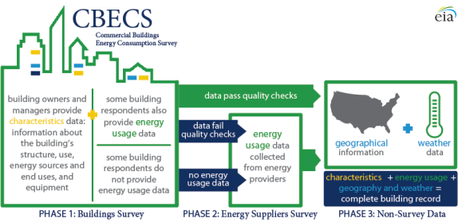

{kind=link}
{kind=link}
Commercial Buildings Energy Consumption Survey (CBECS)
How Was the 2012 CBECS Buildings Survey Conducted?
CBECS 2012 - Release date: March 5, 2015
The Commercial Buildings Energy Consumption Survey (CBECS) project cycle spans at least four years, beginning with development of the sample frame and survey questionnaire and ending with release of data to the public. This set of three methodology documents provides details about each of the three major stages of the 2012 CBECS survey process.
- • How Were Buildings Selected for the 2012 CBECS?
- • How Was the 2012 CBECS Buildings Survey Conducted?
- • How Was Energy Usage Information Collected in the 2012 CBECS?
Background and overview
The Commercial Buildings Energy Consumption Survey (CBECS) is conducted periodically by the U.S. Energy Information Administration (EIA) to provide basic statistical information about energy consumption and expenditures in U.S. commercial buildings and information about the energy-related characteristics of these buildings. The survey is based on a sample of buildings selected using a multi-stage area probability frame supplemented by several lists of large building types. A whole building, as opposed to an individual business or establishment, is the basic unit of analysis for the CBECS because the building is the energy-consuming unit. The 2012 CBECS was the tenth survey in the series conducted by EIA since 1979.
The CBECS is conducted in two data-collection stages: a Buildings Survey and an Energy Suppliers Survey (ESS). The Buildings Survey collects information about selected commercial buildings through voluntary interviews with the buildings' owners, managers, or tenants. In the 2012 survey, these data were collected using computer-assisted interviewing techniques, both in-person and by telephone. The ESS is initiated only if the respondents to the Buildings Survey cannot provide the energy consumption and expenditures information, or if the information provided is outside some ranges of expected values.
During the Buildings Survey, respondents are asked questions about the building size, use of the building, types of energy-using equipment and conservation measures, the types of energy sources used, and the amount and cost of energy used in the building during calendar year 2012.
Upon completion of the Buildings Survey, the ESS is initiated for buildings whose respondents did not provide consumption and expenditures information, or provided information that was not within expected values. The ESS obtains data about the building's actual consumption of and expenditures for energy from records maintained by energy suppliers. These billing data are collected using an online data collection under EIA's mandatory data collection authority. Under contract with EIA, a survey research firm conducted both the 2012 Buildings Survey and the ESS.
In addition to the data collected from the two survey phases, the final CBECS file is augmented with known geographic information (Census region and division) and with weather data acquired from the National Oceanic and Atmospheric Administration (NOAA). Daily high and low temperatures are used to calculate annual heating degree days (HDD) and cooling degree days (CDD).
{kind=link}
New to the 2012 CBECS...
- The target sample size was 50% larger relative to the previous CBECS.
- Respondents were provided the option to complete the interview by telephone.
- Selected interview questions were recorded using Computer-Assisted Recorded Interview (CARI) techniques for quality control purposes.
- Follow-up energy assessments were completed at about 200 buildings by trained energy auditors. EIA compared the data collected by different methods of administration; the results will be published in a report later this year.
- Water usage data collection, introduced in the 2007 CBECS, was retained in the 2012 CBECS with some modification.
Determining building eligibility
A building is eligible for the CBECS if it meets three criteria: (1) building definition, (2) building use, and (3) building size.
Criterion 1—building definition: A building is a structure intended for human access that is totally enclosed by walls that extend from the foundation to the roof; therefore, structures such as water, radio, and television towers are excluded from the survey. Also excluded are: partially open structures, such as lumber yards; enclosed structures that people usually do not enter, such as pumping stations, cooling towers, oil tanks, statues, or monuments; dilapidated or incomplete buildings missing a roof or a wall; and, beginning with the 1995 CBECS, stand-alone parking garages. There is one exception to the building definition criterion: structures built on pillars so that the first fully enclosed level is elevated are included. These types of buildings are included because such buildings fall short of meeting the definition only because of the technical shortcoming of being raised from the foundation. They are totally enclosed, are used for common commercial purposes, and consume energy in much the same way as buildings that sit directly on a foundation.
Criterion 2—building use: In order to be included in the CBECS, a building has to be used primarily for some commercial purpose; that is, more than 50% of the building's floorspace must be devoted to activities that are not residential, manufacturing1, industrial, or agricultural. The primary use of the sampled building governs whether the building is included in the CBECS.
Examples of buildings that are not included in the CBECS sample:
- Farm buildings, such as barns (unless space is used for retail sales to the general public)
- Industrial or manufacturing buildings that involve the processing or procurement of goods, merchandise, or food (again, unless space is used for retail sales to the general public)
- Buildings on most military bases and buildings where access is restricted for national security reasons
- Single-family detached dwellings that are primarily residential, even if the occupants use part of the dwelling for business purposes
- Large mixed-use buildings in which the majority of floors are residential units, even if the street-level businesses are commercial
- Mobile homes that are not placed on a permanent foundation (even if the mobile home is used for nonresidential purposes)
Criterion 3—building size: A commercial building must measure more than 1,000 square feet (about twice the size of a two-car garage) to be considered in scope for the CBECS. This building size criterion is met in successive size cutoffs, which are applied during the sample development and screening stages and during interviews. Buildings judged to be less than 500 square feet during the sampling and screening stages are not included at all or are removed from the survey. During the interviewing stage, the survey instrument terminates the interview when the square footage is reported to be 1,000 square feet or less, except for interviews at establishments within strip shopping centers, for which there is no minimum square footage.
These criteria are applied as filters at three different stages in the survey process to determine each building's eligibility for the CBECS:
- During the development of the sample, buildings are not eligible to be sampled if they are obviously not a building, not commercial, or very small.
- During the first field visit to the building, called the screening phase, all three of these criteria are confirmed by interviewer observation.
- During the interview with the building respondent, questions about the building use and building size are used to terminate the interview for buildings that passed the sampling and screening process but that are ultimately too small or have too much non-commercial floorspace.
Preparation for data collection
The groundwork for CBECS data collection begins at least a year before the field period, and encompasses several tasks, including designing and testing the questionnaire, as well as training supervisors and interviewers.
Questionnaire design: The computer-assisted survey instrument was programmed by EIA using Blaise software. Although a set of core questions remained the same or very similar to those used in previous surveys, the 2012 CBECS questionnaire included some modifications.
The goal of questionnaire updates was either to clarify questions in order to decrease cognitive burden on the respondents or to accommodate new data needs. For example, questions were added about the level of building use (such as percent occupancy), about emerging technologies (such as distributed wind turbines and smart metering), about electronics that are becoming more ubiquitous in buildings (such as number of TVs or video displays and interactive whiteboards), about medical uses (such as number of MRI machines and the presence of an outpatient surgery center), and about energy management (such as lighting controls and the implementation of a formal energy management plan). Outdated questions were removed from the questionnaire, such as those regarding the presence of electronic ballasts on fluorescent light bulbs.
Data for strip shopping centers were collected using special procedures (see box below). For this reason, there were three unique versions of the survey instrument: one for buildings (most interviews used this version), one for the strip shopping center as a whole (usually administered to strip shopping center management), and one for individual establishments within the strip shopping center. The strip shopping center and establishment interview questions were subsets of the building interview questions; together they encompassed most of the questions asked in the buildings interview.
How were data collected for strip shopping centers in the 2012 CBECS?
Finding a single respondent who is knowledgeable about the entire building has always been a particular challenge for strip shopping centers, as most of the potential respondents on site are store managers who can only give information about their own establishment. To increase the quality of the data collected and reduce the burden on respondents, starting with the 2003 CBECS, establishments within strip shopping centers have been sub-sampled and interviewed separately, and the 2012 CBECS strip shopping center procedures were updated with the goal of improved estimates.
In the 2012 CBECS, when an interviewer encountered a strip shopping center during the screening phase of data collection, they were instructed to fill out a roster form with information for each establishment in the building: the name and address of each tenant space (including vacant establishments), a relative measure of size (the number of paces walked by the interviewer across the front of each establishment), and the general use of the establishment (selected from ten categories). After the interviewer completed this form, they scanned it using a portable scanner and then transmitted it to the contractor’s home office for review and subsampling.
To reduce the total number of interviews required, a subsample of two establishments (or three establishments, at strip shopping centers with ten or more establishments) was selected at each strip shopping center building. This subsample was chosen from the roster described above, which was compiled by the interviewer based on their observations, without speaking to a respondent. The relative size and general-use codes helped identify establishments that would be more likely to use large amounts of energy, and the subsampling procedure gave a higher probability of selection to these establishments.
In addition to the establishment interviews, there was also a strip shopping center management interview for each strip shopping center, with questions focused on the building as a whole. The establishment and strip shopping center management interviews were somewhat complementary, with each respondent answering a relevant subset of questions from the full CBECS interview.
Once the establishment and strip shopping center manager interviews were completed, the information collected was used to estimate the size, the energy-using equipment, and other characteristics of similar establishments that were not interviewed but were listed on the roster. Depending on the characteristic being estimated, a similar establishment is one with the same activity, and/or in the same geographic area, and/or of similar size. Once all of the characteristics of all establishments in a strip shopping center are known or estimated, the characteristics of the building as a whole can be estimated.
There were a total of 1,037 establishments subsampled within 421 strip shopping centers, for an average of 2.5 establishments sampled per center. At the end of data collection, there were 650 completed establishment interviews and 253 completed strip shopping center management interviews. When the estimation procedures had been completed, the combination of establishment and strip shopping center management interviews yielded 296 complete strip shopping center building records.
Pretesting: There was not a full-scale pretest of the entire 2012 CBECS questionnaire or data collection process. Instead, there was targeted cognitive pretesting of some proposed new questions. The testing was performed by a member of EIA's Survey Development Team, who pretested sections of the survey with respondents to gather constructive feedback about these concepts and new questions. The respondents for these pretests represented four building types of interest to this research: food services, fire stations, hotels, and office buildings. To ensure that the respondents would not be selected for participation in the production CBECS, the selected respondent buildings were not located in any of geographic areas selected for the 2012 CBECS.
Supervisor and interviewer training: The CBECS building questionnaire is a complex instrument designed to collect data during a personal interview with a respondent at the building site. Well-trained interviewers are imperative to the collection of technical information. Training for the 2012 CBECS included four in-person training sessions: one four-day session for the CBECS home office, trainers, and regional supervisors (held in March 2013); two four-day sessions for two separate groups of interviewers (held in April 2013), and an additional four-day training session (held in June 2013) to add extra interviewers to compensate for workforce attrition.
All prospective interviewers received a home study package before reporting to training, which included reading material and instruction modules that were completed using an online learning system. Many of the CBECS interviewers had experience working on other projects. About 25% of the trainees were new to interviewing and were required to complete a general interviewer techniques course.
The in-person interviewer training sessions included lectures, interactive interviews, Powerpoint presentations, videos, and sessions where the interviewers practiced administering the questionnaire to each other using scripts provided to them. There were about eight training classrooms at each session, averaging 15 interviewers per room. Each classroom was led by a trainer employed by the contractor who was assisted by a data display operator and a field supervisor. At least four EIA representatives attended each training session, and they played an active role in the instruction—presenting an introduction to EIA and the CBECS and providing assistance where needed.
Data collection
CBECS interviews began immediately after interviewer training, in mid-April 2013, and finished in mid-November 2013. Data collection was performed by the contractor's field staff, which initially consisted of about 250 interviewers across the United States under the supervision of 17 field supervisors, 3 regional field managers, and a field director based at the contractor’s home office.
The data collection process began with a screening visit before proceeding with the survey interview.
Screening: Interviewers visited the sampled building in person to locate the building, to determine if the structure met the eligibility criteria, and to determine the boundaries of the sampled building. This initial visit was necessary because there were instances where what had been assigned to the interviewer as a single building was, in fact, more than one building, where the boundaries extended beyond what the sample frame had described, or where the building could not be located.
When they encountered a strip shopping center during this screening visit, interviewers listed all of the establishments within the building. This list of establishments was subsequently sent to the data collection contractor’s home office, where it was reviewed and keyed into a sample frame. Establishments were then subsampled and revisited for a field interview.
Also during this initial contact with either the building or an establishment (after it was subsampled from a strip shopping center), interviewers identified a knowledgeable respondent for the interview phase, left an advance package of materials with or for that person, and made an appointment to return in person or to call by telephone for an interview after allowing enough time for the respondent to look over and fill out the survey materials. Interviewers were instructed to always attempt this initial contact with the respondent in person, as opposed to by telephone.
Advance Package: An introductory packet of materials was given to the respondent or the respondent’s representative before the interview. It contained:
- Letters on DOE and contractor letterhead explaining the study and the steps necessary to prepare for the interview
- A brochure that answered frequently asked questions and illustrated the types of data collected in past CBECS cycles
- A one-page listing of 51 organizations endorsing the 2012 CBECS
- Two worksheets for the respondent to complete before the interview
- An authorization form for release of energy supplier data
- A small booklet of showcards, the questionnaire aids (lists and illustrations) that are normally used during an in-person interview (showcards were provided to all respondents in 2012 in case the interview was done by telephone)
Survey interview: After allowing time for the respondent to look over the survey materials and complete the worksheets, the interviewer returned to the building or establishment or telephoned the respondent at their set appointment time to conduct the CBECS interview. The questionnaire covered a wide range of topics:
- Physical characteristics such as the building activity, size and year constructed
- Building use patterns such as operating hours, number of workers, and ownership and occupancy
- Types of energy-using equipment such as heating, cooling, water heating, refrigeration, lighting and office equipment
- Conservation features and energy management practices
- Types of energy used in the building and whether that energy was used for heating, cooling, water heating, cooking, manufacturing, or electricity generation
- The amount of and expenditures for electricity, natural gas, fuel oil, and/or district heat used in the building in 2012
See Data collection forms for a paper representation of the survey instrument.
The average time to complete a building interview was 41 minutes. Establishment interviews averaged 24 minutes and strip shopping center management interviews averaged 19 minutes. The total average time to obtain the interview, including interviewer preparation, travel time, screener time, interview time, callbacks, and transmission to the home office, was just over 13 hours. On average, nearly nine contact attempts were required to obtain a building interview, more than seven attempts for an establishment interview, and more than six for strip shopping center interviews.
Telephone mode: For the 2012 CBECS, interviewers were able to offer respondents the option of conducting the interview over the phone. Because respondent cooperation rates are typically lower over the telephone, interviewers were provided with guidelines to help them determine when they should offer the option of a phone interview. Likely candidates for phone interviews included:
- Busy respondents who appeared more likely to complete the interview if it was conducted in a number of short sessions over several days
- Respondents in locations that would require significant travel time for the interviewer
- Respondents often broke or rescheduled appointments on short notice
- Buildings where there was no convenient space for the interviewer to set up their laptop and other materials
Interviewers were reminded that some respondents might find it easier to avoid or reschedule a phone call than they would an interviewer standing at the door. As part of training, the contractor provided guidelines on leaving voicemail messages, reminder calls, and stressed that interviewers should consider both the characteristics of both the building and the respondent when evaluating whether a telephone interview could be effectively used. Supervisors monitored and discussed which modes had been used to contact a building as part of their weekly report call with interviewers.
For building interviews, slightly less than a quarter of all interviews were completed over the telephone; for establishments, slightly more than a quarter, and for strip shopping center management interviews, close to half were completed by telephone.
Computer-assisted recorded interview (CARI): CARI is a survey tool integrated with the survey instrument that can be used to capture digital recordings of interviewers and respondents for selected questions. The 2012 CBECS was the first CBECS to implement CARI. EIA selected survey questions of interest. For the selected questions, the CARI system captured an audio recording and a screenshot of the answer keyed by the interviewer. The first question of the interview requested the respondent’s consent to have the interview recorded. When respondent consent was granted, the CARI functionality began and recordings and screenshots were attached to the interview record. The recorded questions were used for interviewer validation, quality control, and data review.
Interviewer supervision: The main procedure used to ensure that the interviews were conducted as intended was validation, which is the process of verifying that the interview had indeed been conducted at the correct building according to specified procedures. Ten percent of the entire sample was preselected for validation; interviewers did not know beforehand which cases were selected. Validation took place for ineligible and nonresponding buildings as well as for completed interviews.
For completed interviews with CARI recordings, validation was performed at the data collection contractor’s home office by listening to some or all of the available audio files to confirm that the interviewer was speaking with a knowledgeable respondent and recording accurate responses. If the audio files were not available because the respondent did not permit recording, or if they were inaudible, home office staff contacted the respondent by telephone and asked a short series of scripted questions to confirm that the interview had occurred, that correct procedures were followed, and that the answers to a sample of questions were recorded accurately. For those cases finalized as ineligible or out of scope, validation was completed using online research to confirm the building’s status, and by telephone calls to any contacts identified by the respondent. If no contacts were available, and the status of the building could not be confirmed, the case was returned to the field for in-person validation by a second interviewer.
Minimizing nonresponse: Supervisors reviewed pending casework with interviewers during weekly report calls. During these calls, interviewers discussed certain situations with their supervisor-cases where identifying a potential respondent had been difficult and cases where a respondent had been identified but seemed reluctant or had refused–and the supervisor provided guidance on how to proceed. As part of training instruction, interviewers were advised on how to identify cases where a telephone contact might be more effective than repeated in-person attempts based on location, the type of business occupying the building, and any preference expressed by the respondent. If a respondent appeared to be reluctant to complete the interview due to time concerns, the interviewer might suggest conducting the interview in several short phone calls at the respondent's convenience.
Refusals make up the largest nonresponse category. Every refusal was reviewed to determine if conversion should be attempted, and if so, what method seemed most likely to overcome the respondents' reluctance to participate. Refusal avoidance and conversion efforts included mailings and telephone contacts from both the contractor and EIA. Two slightly different letters were designed to address specific concerns and questions based on the building size; for small buildings, their contribution to the statistical accuracy of the CBECS was emphasized, while for larger buildings, the letter emphasized how the data were used for forecasting and benchmarking.
Despite these efforts, there were a total of 3,593 nonresponse cases at the end of data collection. This included 3,067 buildings, 168 strip shopping centers, and 358 establishments. These nonresponse cases include both firm refusals and cases where an interview could not be conducted because a knowledgeable respondent could not be identified, could not be contacted, or was unable to participate due to a language barrier.
Response rates: The response rate is calculated by dividing all completed cases plus ineligible buildings by the total cases minus those categorized as out of scope. Ineligible buildings are those cases that were determined during the interview (from information provided by the respondent) to be too small or not sufficiently commercial to be included. These cases are less obviously ineligible than the out of scope cases which are those that were determined during the screener phase (without talking with a respondent) to be outside the scope of interest as defined for the purposes of the CBECS.
The overall unweighted response rate (including complete strip shopping center cases) was 70.3%:
(6,720 completed cases + 534 ineligible) / (12,199 total sampled – 1,878 out of scope)
The response rate for establishment interviews was 65.3%:
(650 completed interviews + 24 ineligible) / (1,037 total sampled – 5 out of scope)
The response rate for strip shopping center management interviews was 60.1%:
(253 completed cases + 0 ineligible) / (421 total sampled – 0 out of scope)
Data processing
The initial processing of CBECS data, which included editing the questionnaires and calculating the survey weights for each building, occurred at both EIA and the survey contractor’s home office. Final data preparation occurred at EIA and consisted of checking the data for internal consistency, checking the data against data from previous surveys, conducting imputation procedures for missing data, and preparing cross-tabulations for release to the public.
Data editing: Data editing for the 2012 CBECS Buildings Survey occurred at several points during data collection and processing. The first stage of editing occurred during the computerized interview. The survey instrument prevented skip pattern errors and the entry of ineligible codes. It also permitted some editing of the data as the interview proceeded. Arithmetic checks were conducted for some items, and consistency checks between items prompted interviewers to confirm questionable responses. Most edits were soft, meaning that they could be suppressed after the interviewer verified the information with the respondent. For a few crucial questions or impossible situations, the interview could not continue until the edit was resolved; for example, if the square footage of a restaurant area within a building was reported as being larger than the building itself, the discrepancy had to be resolved before proceeding with the interview.
The second phase of editing was done by the contractor, before the data were delivered to EIA. The goal of these edits was to identify cases where the wrong building was interviewed, where the building should have been classified as out of scope, or where critical data items were missing and data retrieval was required. These edits involved:
- Flagging and investigating cases where the square footage category reported by the respondent differed by more than one size class from the size category used for sampling
- Reviewing open-ended other specify responses to the building activity
- Checking critical items for don’t know or refused answers
- Comparing the square footage of the building to the number of employees and other measures of size reported to determine if the ratios fell within expected parameters based on building activity
After cases passed the data validation and editing done by the contractor, they were transmitted to EIA; files were provided to EIA every three weeks beginning a couple months into data collection. Additional editing was performed at EIA upon receipt of the data. This editing included:
- Reviewing edits that were suppressed within the instrument
- Running additional edit checks that were considered important but not crucial enough to stop the interview
- Updating data based on clarifying comments that were entered by the interviewers
- Incorporating responses to open-ended questions
- Reviewing consumption and expenditures data
Item nonresponse: Prior to publication of the 2012 CBECS, adjustments were made for item nonresponse. Item nonresponse is a specific piece of information that is missing in an otherwise completed interview. In the case of building interviews, the usual cause for item nonresponse is that the building representative lacked the knowledge to answer a questionnaire item.
Questions with item nonresponse were treated by a technique known as hot-deck imputation. In hot-decking, when a certain response is missing for a given building, another similar building (a donor building) is randomly chosen to furnish its reported value for that missing item. That value is then assigned to the building (a receiver building) with the item nonresponse. This procedure was used to reduce the bias caused by different nonresponse rates for a particular item among different types of buildings.
Donor buildings had to be similar to the nonresponding building in characteristics correlated with the missing item. The characteristics used to define a similar building depended on the nature of the item to be imputed. The most frequently used characteristics were principal building activity, floorspace category, year constructed category, and Census region. Numeric items that had a categorical follow-up question used the categorical follow-up. Other characteristics, such as type of heating fuel and type of heating and cooling equipment, were used for specific items. To hot-deck values for a particular item, all buildings were first grouped according to the values of the matching characteristics specified for that item. Within each group defined by the matching variables, donor buildings were then assigned randomly to receiver buildings.
As was done in previous surveys, the 2012 CBECS used a vector hot-deck procedure. With this procedure, the building that donated a particular item to a receiver also donated certain related items if any of these were missing. Thus, a vector of values, rather than a single value, is copied from the donor to the receiver. This procedure helps to keep the hot-decked values internally consistent, avoiding the generation of implausible combinations of building characteristics.
Item imputation rates are generally low in the CBECS. The average percent of cases needing imputation across all variables was 5.2% and the median was 3% (i.e., half the CBECS variables were missing less than 3% of responses and half were missing more than 3%.).
Confidentiality of information
The names or addresses of individual respondents or any other individually identifiable data that could be specifically linked to an individual sample building or building respondent are seen only by employees of EIA, its survey contractor, and EIA-approved agents. The data are kept secure and confidential at all times under the protection of a federal law called the Confidential Information Protection and Statistical Efficiency Act of 2002 (CIPSEA). The legislation gives EIA both the authority and the responsibility to protect from disclosure identifiable data that respondents have been promised would be kept confidential and be used exclusively for statistical purposes. The CBECS meets these criteria, and the 2012 cycle was collected under CIPSEA protection.
In order to meet the responsibility of protecting data for individual respondents, all building identifiers are removed from the data file before the public use microdata file is created. The finest level of geographic detail that is publicly available is the Census division. In addition, building characteristics that could potentially identify a particular responding building, such as number of floors, building square footage, and number of workers in the building, are masked to protect the respondent's identity.
_____________________________
1Since the 1995 CBECS, commercial buildings on manufact uring sites are considered out of scope. Before the 1995 CBECS, if a commercial building, such as an office building, was located on a manufacturing site, it would have been considered in scope.
Background Information
Is it possible to obtain a list of all the buildings that participated in your survey?
Features
Water Consumption in Large Buildings Summary (2012)

EIA’s residential and commercial studies require significant data collection and analysis
February 7, 2017
Office buildings with data centers use significantly more electricity than other offices
October 5, 2016
Recent energy intensity decline in government buildings exceeds commercial sector average
September 16, 2016